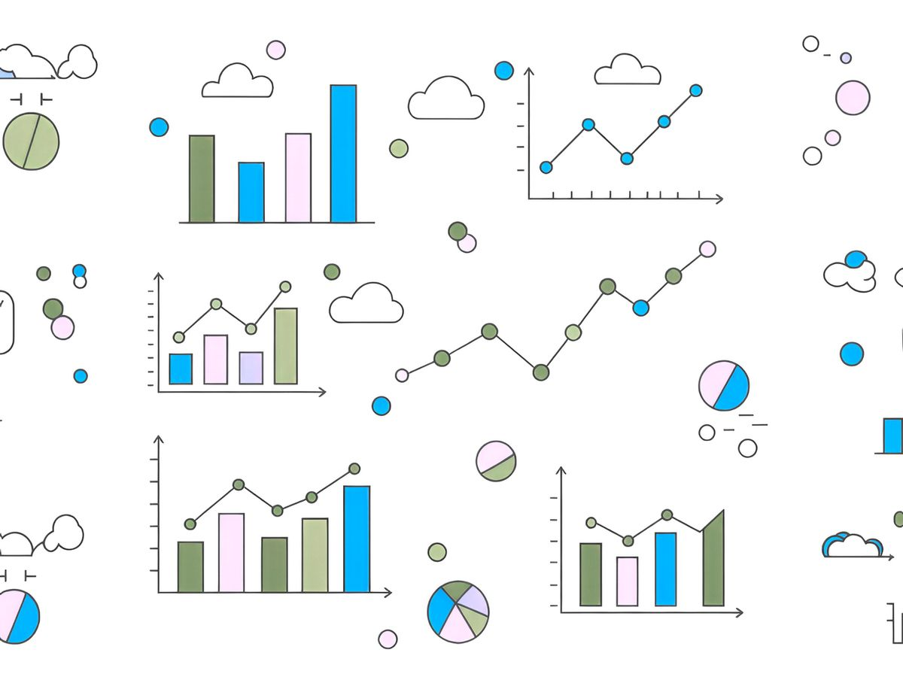

🪷The Pond #1 : Making the right choices
Your first dip and an upcoming free course.
by Ada Homolova · May 28, 2025

Welcome to 🪷The Pond 🪷!
I’m Ada – freelance data journalist, teacher, speaker, and proud founder of Data Frosch. With over a decade of experience turning messy datasets into stories, I've also made it my mission to help other journalists and data enthusiasts feel more confident working with data.
Whether you're diving into spreadsheets, learning to code, or visualizing stories that matter, you’ve just found your cozy corner of the internet pond where we turn data into something leap-worthy.
Come join me at my live YouTube session next week!
🎥 YouTube Live: Choosing the Right Chart for Your Data
We’ve got an exciting free course for you! Join me for a fun and practical live session where I’ll break down how to pick the best chart to tell your data story. It’s perfect for journalists, analysts, designers—anyone who’s ever stared at a dataset wondering “Do I go bar, line, or scatter?”
🎬 Join the livestream here on Monday, June 9, 2025 | 17:00 - 17:45 CEST
📅 Add to your calendar:
→ Google Calendar
→ Outlook
→ Office365
D3, autoclean and dataviz flows
Here are three old and new links I stumbled upon this week. May they spark joy!
30 Days of D3 Dataviz - a series of tutorials to learn 3D I have been wanting to dive into since a year!
AutoClean - Automated Data Preprocessing & Cleaning - did not try out yet, but the idea of automatic dataframe cleaning feels very soothing.
Free tools to automate your data flows from source to chart - a Dataharvest session with tutorial and scripts!
Hey Ada, I would like to learn …
Any aspect of data storytelling you would be interested in learning more about? Let me know via ada@datafrosch.fun!
🐸